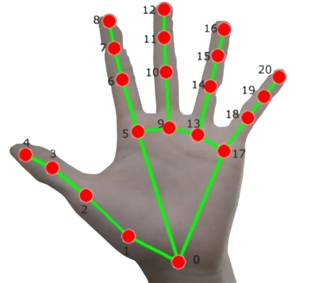
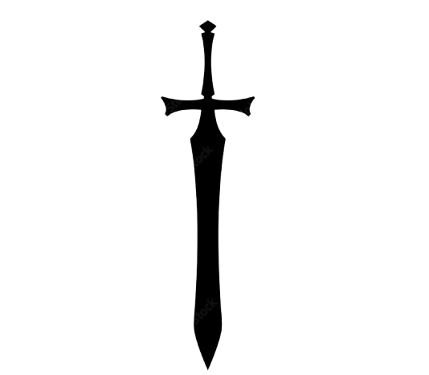

01
Hand Tracker
Real-time hand detection and gesture recognition using computer vision. Tracks landmark positions to enable touchless interaction.

I build things for the web. Clean, creative, a little unexpected.
I'm a developer who cares as much about how something feels as how it works. I write clean code with considered design, building things that are fast, functional, and quietly beautiful.
When I'm not shipping features, I'm exploring creative tech, tinkering with generative visuals, and obsessing over small details nobody asked for but everyone notices.
Semantic, accessible structure. The bones that hold everything together.
Layouts, animations, and visual polish that make interfaces feel alive.
Interaction, logic, and bringing ideas to life on the client side.
Scripting, automation, and building the backend logic that powers things.
Version control, collaboration, and keeping code history clean.
Real-time hand detection and gesture recognition using computer vision. Tracks landmark positions to enable touchless interaction.

A fully responsive website for cat lovers. Playful UI, smooth animations, and a lot of personality.
A dark fantasy game concept with a custom visual identity, world-building, and a hand-crafted UI system.
